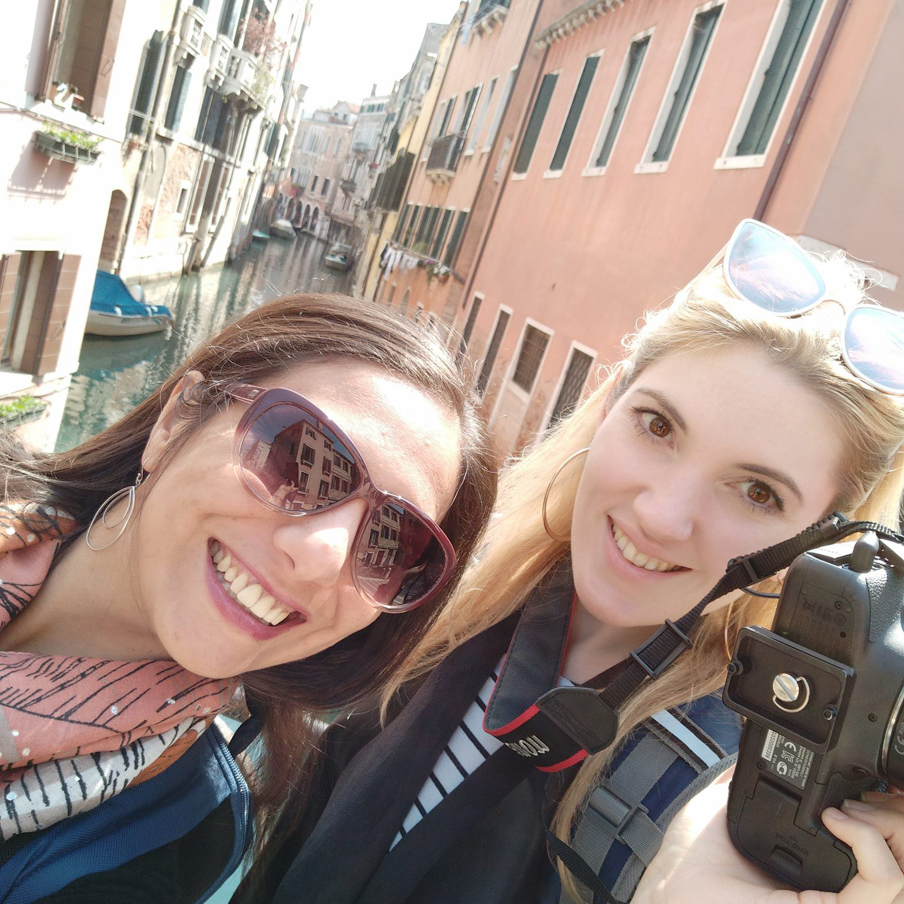

Dr. Alessandra Celati is an Italian researcher affiliated with the University of Verona, who has been dealing with the history of religious dissent in sixteenth-century Italy over the past 10 years. She has published several articles about the history of religious dissent and the history of medicine in sixteenth century Italy in first class journals, and has written a book “The World of Girolamo Donzellini. A Network of Dissident Physicians in Sixteenth-Century Venice” (Routledge, 2022) which details the story of Donzellini and his network for an academic audience. Her main research interests are religious history, history of medicine, the reconstruction of heretical networks in early modern Italy and Digital Humanities. She is also a history and philosophy teacher and she has long been dreaming of the possibility to share her research, and the underground histories she came across in the archives, with a non-specialist audience, other than with her students.
Dr. Emma Hinchliffe, originally from the U.K, completed her PhD in early modern British history at The University of Washington, Seattle in 2021. She is a young scholar, a journalist and a filmmaker. She was instantly fascinated by the story of a secret social network of dissenters in Italy when she heard Alessandra present on the topic at the Renaissance Society of Southern California Conference at the Huntington Library. Emma is also a documentary filmmaker (examples of her work can be seen on
Vimeo). She is currently working as a reporter at the Seattle Daily Journal of Commerce covering architecture and engineering. Hinchliffe’s primary intellectual interests are early modern political thought and culture. Her PhD explored and argued for the rise of a new kind of cosmopolitan self fashioning at the early Tudor Court. She is working on turning this thesis into a book.
This non-profit project was born out of this serendipitous and international collaboration.
